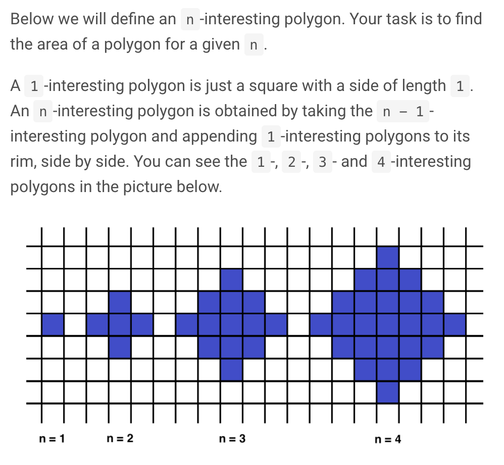

Como evitar RecursionError em Python
Hoje me deparei com um problema bem interessante no codesignal:

O algorítmo que fiz para resolvê-lo foi:
- Se n for igual a 1, retorne 1;
- Se n for maior que 1, pegue o resultado anterior e some a 4 * (n - 1);
- Exemplo: o valor para 1-interesting é 1, para 2-interesting é 1 + 4 * (2 - 1), que é 5;
Minha primeira abordagem foi utilizar recursão, como mostra o código abaixo:
def shape_area(n):
if n == 1:
return n
return shape_area(n - 1) + 4 * (n - 1)
Entretanto, ao inserir um valor muito alto eu recebi a exceção: RecursionError: maximum recursion depth exceeded in comparison.
Para entender o erro, considere o código abaixo:
def hello():
ola()
print("Hello!")
def ola():
hola()
print("Olá!")
def hola():
print("¡Hola!")
if __name__ == '__main__':
hello()
O Python criará uma pilha de chamadas mais ou menos assim:
hola()
ola()
e por fim…
hello()
Quando a capacidade máxima dessa pilha é atingida, uma RecursionError é levantada. Nota: este valor pode ser alterado com o código abaixo:
import sys
RECURSION_LIMIT = 5500000
# Não faça isso em prod :)
sys.setrecursionlimit(RECURSION_LIMIT)
Bem a grosso modo, em algumas linguagens de programação uma maneira de lidar com este problema é utilizando Tail Recursion, onde a última instrução de uma função é uma chamada à mesma; nesses casos o compilador fica responsável pela otimização da pilha de chamadas de modo a não permitir que esse tipo de exceção seja levantada. Contudo, Guido Van Rossum disse que não tem planos de implementar esse tipo de otimização no Python.
A maneira que resolvi este problema foi não usar recursão e salvar o estado da variável result no escopo do método até o while atingir a condição de parada:
def shape_area(n):
result = 0
while n > 1:
result += 4 * (n - 1)
n -= 1
return result + 1
Até a próxima! :)
Subscribe to Lucas Marques
Get the latest posts delivered right to your inbox